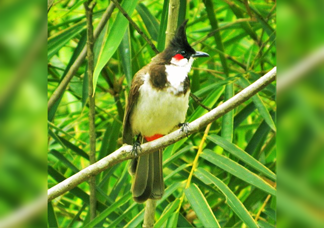
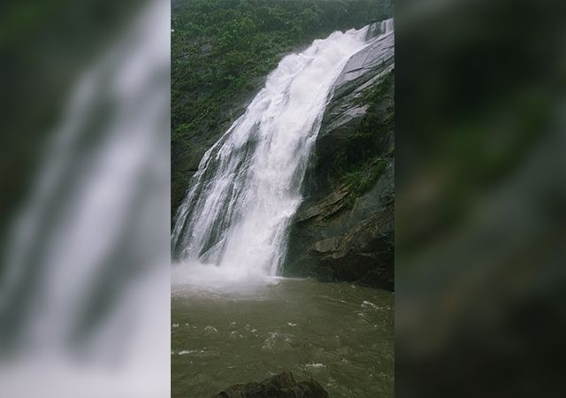
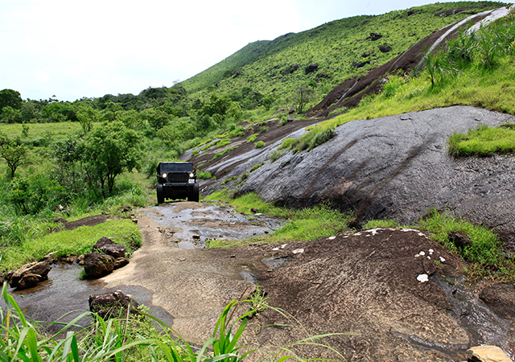
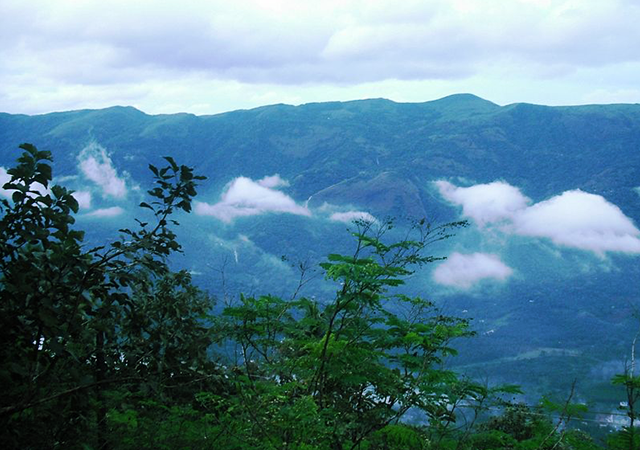

An ancient town located on a hilltop bordered by the western ghats on the east and the thrilling Vembanad Lake on the west, Kottayam is a culturally rich and naturally enchanting destination. Apart from nature's bounty, the town has many laurels to its name. It is a proud town to achieve 100% literacy in India for the first time. Also being the land of several publishing houses and print media, Kottayam is also tagged as the 'Akshara Nagari' meaning 'City of letters'.
1.Kumarakom Bird Sanctuary
Kumarakom Bird Sanctuary is one of the major highlights of Kottayam. Bird lovers and ornithologists frequent the destination to watch the aviator species in motion. The best time to visit this place would be during the breeding season of the resident wetland birds and that would be during June to August.You can easily spot the following birds – White Ibis, numerous species of kingfisher, egrets and herons, waterfowl, cuckoo, owl, wood beetles, fly catchers, parrots and larks. The sanctuary offers boating facilities too.

2.Marmala Waterfalls
Falling from 60 meters, the cascading Marmala waterfalls is a feast for the eyes when it merges with Meenachail River. The path to the waterfalls could be a bit tedious, but is definitely worth the effort. The jeep would take you to the waterfalls and at the end of it, you can enjoy the bliss of hearing a beautiful melody of the falls.

3.Elaveezhapoonchira
Elaveezhapoonchira is a hill station in Kottayam, and the perfect weekend getaway for people coming in from Kochi and Trivandrum. Elaveezha means “leaves that do not fall” and poonchira means “valley”, so basically it is a valley where the leaves do not fall. Standing atop the hill station, you can see good portions of the following districts – Idukki, Kottayam, Ernakulam, Alappuzha, Pathanamthitta and Thrissur.

4.Illikkal Kallu
Lying in Moonnilavu and Thalanadu village of Meenachil taluk, Illikkal Kallu is a rock situated 6000 feet above sea level. You can reach this pristine location by maneuvering the hairpin bends and narrow, zig zag roads, but it’s definitely worth the effort. The panoramic view up the hill is one of the best in Kerala.
5.Nadukani
Nadukani is a trekker’s paradise. You can trek up 3000 feet of thick wooded hills and dense forests, and once you are atop, you will be treated to magnificent views of Muvattupuzha River, Malankara Lake and Malankara Dam. This place is about 68 kilometers from Kottayam, but an effort you would truly relish.
